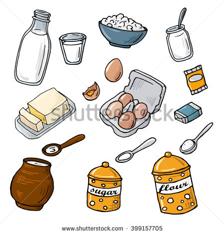
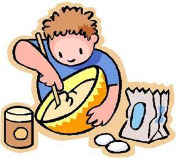

De pesto pannenkoek!
Introductie
De pesto pannenkoek is een gerecht van de Engelse Nigella Lawson. Pesto zelf komt oorspronkelijk uit de Italiaanse stad Genua.
De eerste "pannenkoek" werd rond de 5e voor het eerst vermeld in het oude Griekenland, en is sindsdien rond de wereld verspreid.
Ingrediënten voor 5 pesto pannenkoeken:
- 75 gram pesto
- 1 grote ei
- 75 gram meel
- 150 milliliter half volle melk
- olie voor frituren
- 5 grote dunne plakjes ham

Volg deze stappen om een pesto pannekoek te maken:
- Meng of klop de pesto, ei, bloem en melk samen om een beslag te maken.
- Olie een crepe pan of zware bakpan, wrijf overmatige olie af met wat keukenpapier en plaats over een middelmatige hitte.
- Spoel ongeveer 100 ml kopjes beslag in, wikkel onmiddellijk om een dunne crêpe te krijgen.
- Zodra de bovenkant droog wordt en de randen opheffen,
sla het over met een dunne rubber of houten spatel om de andere kant ongeveer 30 seconden te koken.
- Leg de pannenkoeken tussen stukken bakpapier of vetpapier
- Eenmaal klaar, leg een stuk ham op elkaar en rol ze op of vouw ze in driehoeken
- Smullen maar! Eet smakelijk! Bon Appetit!

Origineel recept